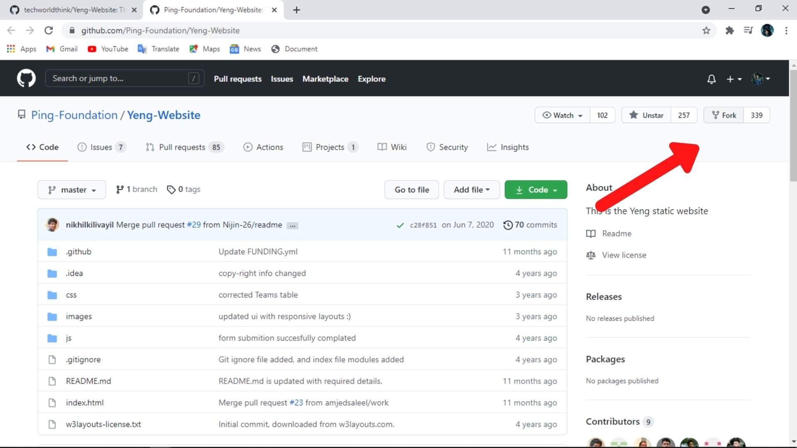

First you need to fork the repository at which you want to contribute. (after forking a repo with the same name will be created on your github account)

Then you need to clone your forked repository
Go to your repository list then open forked repository.
click on code option
copy that url for your repository
Open git bach
use this command to clone your github repo to your local directory
$ git clone url-copied-in-step2
close git bash
within the same directory where you open git bash , there was be folder created with the name of your
repository.
make changes in your local repository.
after making changes , you need to push this changes to your forked github repository.
to do this follow step 6
$ git add --all
$ git commit -m "what you did specify here"
$ git push -u origin main
your forked github reposity is updated.
but you need to push this changes in your forked repository to main repository where from you forked.
create a pull request to main repository.
goto pull request tab
create a pull request with a message
All changes in your forked repo is pushed to main repo.
Download git from ere
Install it
Now need to configure your git with your github credentials
use this commands for configure.
$ git config --global user.name "FIRST_NAME"
$ git config --global user.email "MY_NAME@example.com"
your git is ready now
If many peoples contribute to a repository you need to update your fork with the main repo
goto your forked repository
within pull request tab (see section 1 step 8)
create a pull request to merge with the main repo.
(you can understand is there any need of update , by checking the commits status in both repositories )
After updating your forked repository ,you can update your local repository use this command.
$ git pull
Now make your changes and goto section 1